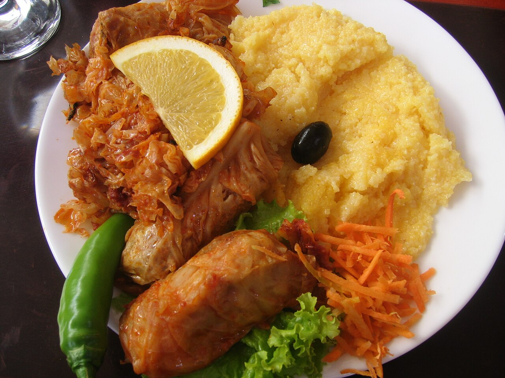

Family Bistro
Bistro de familie în Cluj-Napoca.
Scrieți la bistroLa masă
Mâncare de bistro, pentru familie. Meniul nu este confirmat pe această pagină mostră. Prețurile nu sunt publicate aici.

Cluj-Napoca
Programul nu este confirmat pe această pagină mostră.